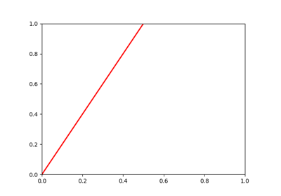
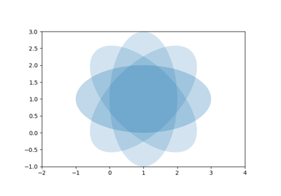
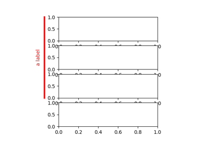

Matplotlib Examples¶
(Not plotted in docs). These are really more for development purposes and checks, and not really intended as part of the documentation.

Artist tests

Matplotlib Example


draw a span
(Not plotted in docs). These are really more for development purposes and checks, and not really intended as part of the documentation.